전기공사산업기사 (2013-03-10 기출문제)
1과목: 전기응용
1. 목표 값이 시간에 따라 변화하는 것을 목표 값에 제어량을 추종하도록 하는 제어가 아닌 것은?
- 프로그램제어
- 비율제어
- 정치제어
- 추치제어
(정답률: 62%)

2. 일반적으로 사용되는 서미스터(thermister)는 온도가 증가할 때 저항은?
- 감소한다.
- 증가한다.
- 임의로 변한다.
- 변화가 없다.
(정답률: 78%)
3. 배리스터(Varistor)의 주된 용도는?
- 전압 증폭
- 온도 보상
- 출력 전류 조절
- 스위칭 과도전압에 대한 회로 보호
(정답률: 80%)
4. 전기도금에 사용되는 전원 장치로 적합한 것은?
- 건전지
- 유도 발전기
- 셀렌 정류기
- 교류 발전기
(정답률: 69%)
5. 가스입 전구에 아르곤가스를 넣을 때에 질소를 봉입하는 이유는?
- 대류작용촉진
- 대류작용억제
- 아크억제
- 흑화방지
(정답률: 60%)
6. 자동제어에서 검출장치로 소형 직류발전기를 사용하였다. 이것은 다음 중 무엇을 검출하는 것인가?
- 속도
- 온도
- 위치
- 유량
(정답률: 81%)
7. 3300[K]에서 흑체의 최대 파장[μ]은 약 얼마인가? ( 단, 빈의 변위법칙에서 상수 값은 2896[μ·K]이다. )
- 0.878
- 1.140
- 1.579
- 1.899
(정답률: 54%)
8. 단상 유도전동기의 기동 토크가 큰 순으로 올바른 것은?
- 콘덴서기동형 – 분상기동형 – 반발기동형
- 반발기동형 – 분상기동형 – 콘덴서기동형
- 반발기동형 – 분상기동형 – 세이딩코일형
- 콘덴서기동형 – 반발기동형 - 세이딩코일형
(정답률: 80%)
9. 인쇄도장, 난방, 보온, 조리 등 각 분야에서 많이 응용되고 있으며 전구의 필라멘트 온도는 2400~2500[K]로서 수명은 약 5000시간 정도이고 내열유리를 사용하고 있는 전구는?
- 적외선 전구
- 할로겐 전구
- 자동차용 전구
- 투광기용 전구
(정답률: 68%)
10. 레일본드와 관계가 없는 것은?
- 진동 방지
- 동 연선 사용
- 전기저항 저하
- 전압강하 저하
(정답률: 61%)
11. 철차의 반대쪽 궤조측에 설치하는 궤조는?
- 전철기
- 철차
- 호륜궤조
- 도입궤조
(정답률: 80%)
12. 직류 직권전동기의 용도는?
- 크레인용
- 전기철도용
- 압연기용
- 공작기계용
(정답률: 73%)
13. 프로젝션 용접의 특징이 아닌 것은?
- 작업속도가 빠르다.
- 용접의 신뢰도가 높다.
- 판재의 두께가 다른 것도 용접할 수 있다.
- 피치(pitch)가 작은 용접은 불가능 하다.
(정답률: 81%)
14. 적외선 건조에 대한 설명으로 틀린 것은?
- 효율이 좋다
- 온도 조절이 쉽다.
- 대류열을 이용한다.
- 많은 장소가 필요하지 않다.
(정답률: 76%)
15. 피열물에 직접 통전하여 발열시키는 직접식 저항로가 아닌 것은?
- 카바이드로
- 염욕로
- 흑연화로
- 카보런덤로
(정답률: 76%)
16. 서로 관계 깊은 것들끼리 짝지은 것이다. 옳지 않은 것은?
- 유도가열 – 와전류손
- 형광등 – 스토크정리
- 표면가열 – 표피효과
- 열전온도계 - 톰슨효과
(정답률: 83%)
17. 전기 화학 당량의 단위는?
- [C/g]
- [g/C]
- [g/k]
- [Ω/m]
(정답률: 70%)
18. 열차 제동방법 중 전기에너지를 트롤리선으로 반환하는 제동방법은?
- 전자제동
- 유압제동
- 발전제동
- 회생제동
(정답률: 80%)
19. 피드백(feed back) 제어계의 특징이 아닌 것은?
- 외부조건의 변화에 대한 영향을 줄일 수 있다.
- 제어계의 특성을 향상시킬 수 있다.
- 목표 값을 정확히 달성할 수 있다.
- 제어계가 단순하고 제작비용이 낮아질 수 있다.
(정답률: 82%)
20. 10층 빌딩에 설치된 적재중량 1000[kg]의 엘리베이터의 승강속도를 60[m/min]로 할 때 필요한 전동기의 출력은 약몇 [kW]인가? ( 단, 평형추의 평형률은 0.6. 효율은 1이다. )
- 3
- 6
- 10
- 13
(정답률: 60%)
2과목: 전력공학
21. 차단기의 소호재료가 아닌 것은?
- 수소
- 기름
- 공기
- SF6
(정답률: 54%)
22. 3상 배전선로의 전압강하율을 나타내는 식이 아닌 것은? ( 단, Vs : 송전단 전압, Vr : 수전단 전압, I : 전부하전류, P : 부하전력, Q : 무효전력 이다.)
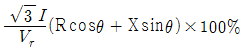
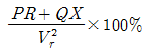
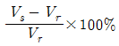
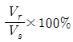
(정답률: 44%)
23. 송전단 전압을 Vs, 수전단 전압을 Vr, 선로의 직렬 리액턴스를 X 라 할 때 이 선로에서 최대 송전전력은? (단, 선로 저항은 무시한다.)
- VsVr / X
- Vs2Vr2 / X
- VsVr / X2
- Vs2Vr2 / X
(정답률: 43%)
24. 전선의 굵기가 균일하고 부하가 균등하게 분산 분포되어 있는 배전선로의 전력손실은 전체 부하가 송전단으로부터 전체 전선로 길이의 어느 지점에 집중되어 있을 경우의 손실과 같은가?
- 3/4
- 2/3
- 1/3
- 1/2
(정답률: 36%)
25. 선로의 전압을 25[kV]에서 50[kV]로 승압할 경우, 공급전력을 동일하게 취급하면 공급전력은 승압전의 ( ① )배로 되고, 선로 손실은 승압 전의 ( ② )배로 된다. (단, 동일 조건에서 공급 전력과 선로 손실률을 동일하게 취급함)
- ① 1/4, ② 2
- ① 1/4, ② 4
- ① 2 ② 1/4
- ① 4 ② 1/4
(정답률: 44%)
26. 전력 퓨즈(POWER FUSE)의 특성이 아닌 것은?
- 현저한 한류특성이 있다.
- 부하전류를 안전하게 차단한다.
- 소형이고 경량이다.
- 릴레이나 변성기가 불필요하다.
(정답률: 33%)
27. 발전기의 자기여자현상을 방지하기 위한 대책으로 적합하지 않은 것은?
- 단락비를 크게 한다.
- 포화율을 작게 한다.
- 선로의 충전전압을 높게 한다.
- 발전기 정격전압을 높게 한다.
(정답률: 32%)
28. 차단기에서 “0 – t1 – C0 – t2 – C0” 의 표기로 나타내는 것은? ( 단, 0 : 차단 동작, t1, t2 : 시간 간격, C : 투입 동작, C0 : 투입 직후 차단 )
- 차단기 동작 책무
- 차단기 재폐로 계수
- 차단기 속류 주기
- 차단기 무전압 시간
(정답률: 53%)
29. 화력발전소에서 탈기기의 설치 목적으로 가장 타당한 것은?
- 급수 중의 용해 산소의 분리
- 급수의 습증기 건조
- 연료 중의 공기제거
- 염류 및 부유물질 제거
(정답률: 45%)
30. 3상의 같은 전원에 접속하는 경우, Δ결선의 콘덴서를 Y결선으로 바꾸어 연결하면 진상용량은?
- √3배의 진상용량이 된다.
- 3배의 진상용량이 된다.
- 1/√3의 진상용량이 된다.
- 1/3 의 진상용량이 된다.
(정답률: 43%)
31. 수력발전소의 조압 수조(서지 탱크)설치 목적은?
- 수차 보호
- 흡출관 보호
- 수격작용 흡수
- 조속기 보호
(정답률: 40%)
32. 전압이 일정값 이하로 되었을 때 동작하는 것으로서 단락시 고장 검출용으로도 사용되는 계전기는?
- 재폐로 계전기
- 역상 계전기
- 부족 전류 계전기
- 부족 전압 계전기
(정답률: 58%)
33. 전력계통의 전압조정과 무관한 것은?
- 변압기
- 발전기의 전압조정장치
- MOF
- 동기 조상기
(정답률: 39%)
34. 송배전 선로의 도중에 직렬로 삽입하여 선로의 유도성 리액턴스를 보상함으로서 선로정수 그 자체를 변화시켜서 선로의 전압강하를 감소시키는 직렬콘덴서방식의 특성에 대한 설명으로 옳은 것은?
- 최대 송전전력이 감소하고 정태 안정도가 감소된다.
- 부하의 변동에 따른 수전단의 전압변동률은 증대된다.
- 장거리 선로의 유도 리액턴스를 보상하고 전압강하를 감소시킨다.
- 송⋅수 양단의 전달 임피던스가 증가하고 안정 극한 전력이 감소한다.
(정답률: 51%)
35. 배전반 및 분전반의 설치장소로 가장 적당한 곳은?
- 벽장 내부
- 화장실 내부
- 노출된 장소
- 출입구 신발장 내부
(정답률: 52%)
36. 배전선로의 접지 목적과 거리가 먼 것은?
- 고장전류의 크기 억제
- 고저압 혼촉, 누전, 접촉에 의한 위험 방지
- 이상전압의 억제, 대지전압을 저하시켜 보호 장치 작동 확실
- 피뢰기 등의 뇌해 방지 설비의 보호 효과 향상
(정답률: 42%)
37. 철탑의 탑각 접지저항이 커질 때 생기는 문제점은?
- 속류 발생
- 역섬락 발생
- 코로나 증가
- 가공지선의 차폐각 증가
(정답률: 53%)
38. 전선 양측의 지지점의 높이가 동일할 경우 전선의 단위 길이당 중량을 W[kg], 수평장력을 T[kg], 경간을 S[m], 전선의 이도를 D[m]라 할 때 전선의 실제길이 L[m]를 계산하는 식은?
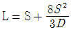
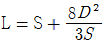
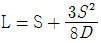
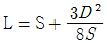
(정답률: 44%)
39. 22.9[kV-Y] 배전 선로의 보호 협조기기가 아닌 것은?
- 컷아웃 스위치
- 인터럽터 스위치
- 리클로저
- 섹셔널라이저
(정답률: 37%)
40. 뒤진 역률 80[%], 1000[kW]의 3상 부하가 있다. 여기에 콘덴서를 설치하여 역률을 95[%]로 개선하려면 콘덴서의 용량 [kVA]은?
- 328[kVA]
- 421[kVA]
- 765[kVA]
- 951[kVA]
(정답률: 42%)
3과목: 전기기기
41. 정격출력 P[kW], 회전수 N[rpm]인 전동기의 토크[kg⋅m]는?
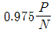
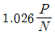
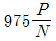
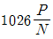
(정답률: 35%)
42. 트랜지스터에 비해 스위칭 속도가 매우 빠른 이점이 있는 반면에 용량이 적어서 비교적 저전력용에 주로 사용되는 전력용 반도체 소자는?
- SCR
- GTO
- IGBT
- MOSFET
(정답률: 43%)
43. 단권변압기의 3상 결선에서 Δ결선인 경우, 1차측 선간전압 V1, 2차측 선간전압 V2 일 때 단권변압기의 자기용량/부하용량은? (단, V1＞V2인 경우이다.)
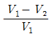
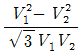
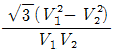
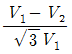
(정답률: 26%)
44. 75[W]이하의 소 출력으로 소형 공구, 영사기, 치과의료용 등에 널리 이용되는 전동기는?
- 단상 반발 전동기
- 3상 직권정류자 전동기
- 영구자석 스텝전동기
- 단상 직권정류자 전동기
(정답률: 47%)
45. 변압기에 사용하는 절연유의 성질이 아닌 것은?
- 절연 내력이 클 것
- 인화점이 높을 것
- 점도가 클 것
- 냉각효과가 클 것
(정답률: 49%)
46. 직류발전기의 구조가 아닌 것은?
- 계자 권선
- 전기자 권선
- 내철형 철심
- 전기자 철심
(정답률: 44%)
47. 3상 유도전동기의 원선도 작성시 필요한 시험이 아닌것은?
- 슬립 측정
- 무부하 시험
- 구속 시험
- 고정자 권선의 저항 측정
(정답률: 49%)
48. 주파수 60[Hz], 슬립 3[%], 회전수 1164[rpm]인 유도전동기의 극수는?
- 4
- 6
- 8
- 10
(정답률: 51%)
49. 4극 60[Hz]의 3상 동기발전기가 있다. 회전자의 주변 속도를 200[m/s] 이하로 하려면 회전자의 최대 직경을 약 몇[m]로 하여야 하는가?
- 1.5
- 1.8
- 2.1
- 2.8
(정답률: 36%)
50. 동기전동기에서 제동권선의 역할에 해당되지 않는 것은?
- 기동 토크를 발생한다.
- 난조 방지작용을 한다.
- 전기자반작용을 방지한다.
- 급격한 부하의 변화로 인한 속도의 요동을 방지한다.
(정답률: 27%)
51. 유도전동기에서 부하를 증가시킬 때 일어나는 현상에 관한 설명 중 틀린 것은? (단, ns : 회전자계의속도, n : 회전자의 속도이다.)
- 상대속도 (ns-n) 증가
- 2차 전류 증가
- 토크 증가
- 속도 증가
(정답률: 35%)
52. 비철극(원통)형 회전자 동기발전기에서 동기리액턴스값이 2배가 되면 발전기의 출력은?
- 1/2로 줄어든다.
- 1배이다.
- 2배로 증가한다.
- 4배로 증가한다.
(정답률: 40%)
53. 직류 전동기의 실측효율을 측정하는 방법이 아닌 것은?
- 보조 발전기를 사용하는 방법
- 프로니 브레이크를 사용하는 방법
- 전기 동력계를 사용하는 방법
- 블론델법을 사용하는 방법
(정답률: 41%)
54. 2극 단상 60[Hz]인 릴럭턴스(reluctance) 전동기가 있다. 실효치 2[A]의 정현파 전류가 흐를 때 발생 토크의 최대 값 [N⋅m]은? (단, 직축(Ld) 및 횡축(Lq) 인덕턴스는 Ld=2Lq=200[mH]이다.)
- 0.1
- 0.5
- 1.0
- 1.5
(정답률: 17%)
55. 동일 정격의 3상 동기발전기 2대를 무부하로 병렬 운전하고 있을 때, 두 발전기의 기전력 사이에 30°의 위상차가 있으면 한 발전기에서 다른 발전기에 공급되는 유효전력은 몇 [kW]인가? (단, 각 발전기의(1상의) 기전력은 1000[V], 동기 리액턴스는 4[Ω]이고, 전기자 저항은 무시한다.)
- 62.5
- 62.5 × √3
- 125.5
- 125.5 × √3
(정답률: 25%)
56. 3상 유도전동기의 슬립과 토크의 관계에서 최대 토크를 Tm, 최대 토크를 발생하는 슬립을 st, 2차 저항이 R2일 때의 관계는?
- Tm∝R2, st=일정
- Tm∝R2, st∝R2
- Tm=일정, st∝R2
- Tm∝1/R2, st∝R2
(정답률: 40%)
57. 50[kW], 610[V], 1200[rpm]의 직류 분권전동기가 있다. 70[%] 부하일 때 부하전류는 100[A], 회전 속도는 1240[rpm]이다. 전기자 발생 토크[kg⋅m]는? (단, 전기자 저항은 0.1[Ω]이고, 계자 전류는 전기자 전류에 비해 현저히 작다.)
- 약 39.3
- 약 40.6
- 약 47.17
- 약 48.75
(정답률: 34%)
58. 변압기 온도시험을 하는 데 가장 좋은 방법은?
- 반환 부하법
- 실 부하법
- 단락 시험법
- 내전압 시험법
(정답률: 42%)
59. 변압기 결선방법 중 3상 전원을 이용하여 2상 전압을 얻고자 할 때 사용할 결선 방법은?
- Fork 결선
- Scott 결선
- 환상 결선
- 2중 3각 결선
(정답률: 52%)
60. 동기 발전기의 전기자 권선법 중 집중권에 비해 분포권의 장점에 해당되는 것은?
- 기전력의 파형이 좋아진다.
- 난조를 방지 할 수 있다.
- 권선의 리액턴스가 커진다.
- 합성유도기전력이 높아진다.
(정답률: 48%)
4과목: 회로이론
61. 다음과 같이 변환시 R1+R2+R3의 값[Ω]은? (단, Rab=2[Ω], Rbc=4[Ω], Rca=6[Ω]이다.)
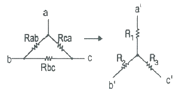
- 1.57[Ω]
- 2.67[Ω]
- 3.67[Ω]
- 4.87[Ω]
(정답률: 35%)
62. 저항 R1=10[Ω]과 R2=40[Ω]이 직렬로 접속된 회로에 100[V], 60[Hz]인 정현파 교류전압을 인가할 때, 이 회로에 흐르는 전류로 옳은 것은?
- √2sin377t[A]
- 2√2sin377t[A]
- √2sin422t[A]
- 2√2sin422t[A]
(정답률: 48%)
63. 두 점 사이에는 20[C]의 전하를 옮기는데 80[J]의 에너지가 필요하다면 두 점 사이의 전압은?
- 2[V]
- 3[V]
- 4[V]
- 5[V]
(정답률: 51%)
64. 그림과 같은 회로에서 t=0일 때 스위치 K를 닫을 때 과도 전류 i(t)는 어떻게 표시되는가?
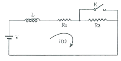
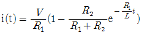
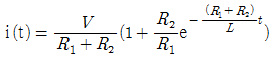
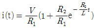
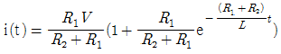
(정답률: 27%)
65. 그림과 같은 4단자 회로망에서 어드미턴스 파라미터 Y12[℧]는?
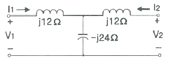
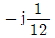
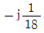
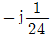
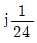
(정답률: 27%)
66. 테브난의 정리를 이용하여 그림(a)의 회로를 (b)와 같은 등가회로로 만들려고 할 때 V와 R의 값은?
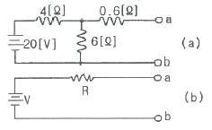
- V=12[V], R=3[Ω]
- V=20[V], R=3[Ω]
- V=12[V], R=10[Ω]
- V=20[V], R=10[Ω]
(정답률: 46%)
67. 그림과 같은 4단자 회로망에서 출력측을 개방하니 V1=12[V], I1=2[A], V2=4[A]이고, 출력측을 단락하니 V1=16[V], I1=4[A], I2=2[A]이었다. 4단자 정수 A, B, C, D는 얼마인가?
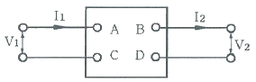
- A=2, B=3, C=8, D=0.5
- A=0.5, B=2, C=3, D=8
- A=8, B=0.5, C=2, D=3
- A=3, B=8, C=0.5, D=2
(정답률: 30%)
68. 대칭 3상 전압을 그림과 같은 평형 부하에 가할 때 부하의 역률은 얼마인가? (단, R=9[Ω], 1/ωC=4[Ω] 이다.)
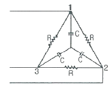
- 0.4
- 0.6
- 0.8
- 1.0
(정답률: 30%)
69. 다음 중 옳지 않은 것은?
- 역률 = 유효전력/피상전력
- 파형률 = 실효값/평균값
- 파고율 = 실효값/최대값
- 왜형률 = 전고조파의실효값/기본파의실효값
(정답률: 48%)
70. 코일에 단상 100[V]의 전압을 가하면 30[A]의 전류가 흐르고 1.8[KW]의 전력을 소비한다고 한다. 이 코일과 병렬로 콘덴서를 접속하여 회로의 합성 역률을 100[%]로 하기 위한 용량 리액턴스[Ω]는?
- 약 4.2[Ω]
- 약 6.8[Ω]
- 약 8.4[Ω]
- 약 10.6[Ω]
(정답률: 24%)
71. 대칭 3상전압을 공급한 3상 유도전동기에서 각 계기의 지시는 다음과 같다. 유도전동기의 역률은 얼마인가? (단, W1=1.2[kW], W2=1.8[kW], V=200[V], A=10[A] 이다.)
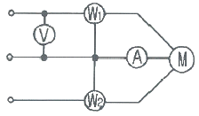
- 0.70
- 0.76
- 0.80
- 0.87
(정답률: 25%)
72. 비정현파에서 정현 대칭의 조건은 어느 것인가?
- f(t) = f(-t)
- f(t) = -f(-t)
- f(t) = -f(t)
- f(t) = -f(t + T/2)
(정답률: 44%)
73. 그림과 같은 회로의 합성 인덕턴스는?
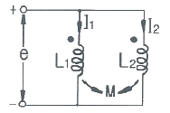
- L1L2-M2 / L1+L2-2M
- L1L2+M2 / L1+L2-2M
- L1L2-M2 / L1+L2+2M
- L1L2+M2 / L1+L2+2M
(정답률: 35%)
74. 100[V] 전압에 대하여 늦은 역률 0.8로서 10[A]의 전류가 흐르는 부하와 앞선 역률 0.8로서 20[A]의 전류가 흐르는 부하가 병렬로 연결되어 있다. 전 전류에 대한 역률은 약 얼마인가?
- 0.66
- 0.76
- 0.87
- 0.97
(정답률: 18%)
75. 두 코일이 있다. 한 코일의 전류가 매초 40[A]의 비율로 변화할 때 다른 코일에는 20[V]의 기전력이 발생하였다면 두 코일의 상호인덕턴스는 몇 [H]인가?
- 0.2[H]
- 0.5[H]
- 1.0[H]
- 2.0[H]
(정답률: 38%)
76. 3상 불평형 전압에서 영상전압이 150[V]이고 정상전압이 600[V], 역상전압이 300[V]이면 전압의 불평형률[%]은?
- 60[%]
- 50[%]
- 40[%]
- 30[%]
(정답률: 46%)
77. tsinωt 의 라플라스 변환은?
- ω / (s2+ω2)2
- ωs / (s2+ω2)2
- ω2 / (s2+ω2)2
- 2ωs / (s2+ω2)2
(정답률: 27%)
78.
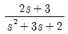
의 라플라스 함수의 역변환의 값은?- e-t+e-2t
- e-t-e-2t
- -e-t-e-2t
- et + e2t
(정답률: 33%)
79. RLC 직렬회로에 t=0에서 교류전압 e=Emsin(ωt+θ)를 가할 때
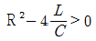
이면 이회로는?- 진동적이다.
- 비진동적이다.
- 임계진동적이다.
- 비감쇠진동이다.
(정답률: 44%)
80. 전압 e=5+10√2sinωt+10√2sin3ωt[V]일 때 실효값은?
- 7.07[V]
- 10[V]
- 15[V]
- 20[V]
(정답률: 40%)
5과목: 전기설비
81. 특고압 가공전선로를 제3종 특고압 보안공사에 의하여 시설하는 경우는?
- 건조물과 제1차 접근상태로 시설되는 경우
- 건조물과 제2차 접근상태로 시설되는 경우
- 도로 등과 교차하여 시설하는 경우
- 가공 약전류선과 공가하여 시설하는 경우
(정답률: 39%)
82. 가공 전선로의 지지물에 시설하는 지선의 안전율은 일반적인 경우 얼마 이상이어야 하는가?
- 1.8
- 2.0
- 2.2
- 2.5
(정답률: 32%)
83. 제1종 또는 제2종 접지공사에 사용하는 접지선을 사람이 접촉할 우려가 있는 곳에 시설하는 경우에 합성수지관 또는 이와 동등 이상의 절연효력 및 강도를 가지는 몰드로 접지선을 덮어야 하는가?
- 지하 30cm로부터 지표상 1.5m까지의 부분
- 지하 50cm로부터 지표상 1.8m까지의 부분
- 지하 90cm로부터 지표상 2.5m까지의 부분
- 지하 75cm로부터 지표상 2.0m까지의 부분
(정답률: 44%)
84. 400[V] 미만의 저압용 계기용변성기에 있어서 그 철심에는 몇 종 접지공사를 하여야 하는가?
- 특별 제3종 접지공사
- 제1종 접지공사
- 제2종 접지공사
- 제3종 접지공사
(정답률: 50%)
85. 가공 전선로에 사용하는 지지물의 강도계산에 적용하는 갑종 풍압하중을 계산할 때 구성재의 수직 투영면적 1[m2]에 대한 풍압의 기준이 잘못된 것은?
- 목주 : 588Pa
- 원형 철주 : 588Pa
- 원형 철근콘크리트주 : 882Pa
- 강관으로 구성(단주는 제외)된 철탑 : 1255Pa
(정답률: 38%)
86. 금속덕트 공사에 의한 저압 옥내배선에서, 금속덕트에 넣은 전선의 단면적의 합계는 덕트 내부 단면적의 몇 [%]이하 이어야 하는가?
- 20
- 30
- 40
- 50
(정답률: 42%)
87. 가공 전선로의 지지물에 시설하는 통신선은 가공 전선과의 이격거리를 몇 [cm] 이상 유지하여야 하는가? (단, 가공전선은 고압으로 케이블을 사용한다.)
- 30
- 45
- 60
- 75
(정답률: 36%)
88. 주상변압기 전로의 절연내력을 시험할 때 최대 사용전압이 23000V인 권선으로서 중성점 접지식 전로(중성선을 가지는 것으로서 그 중성선에 다중접지를 한 것)에 접속하는 것의 시험전압은?
- 16560[V]
- 21160[V]
- 25300[V]
- 28750[V]
(정답률: 40%)
89. 교류식 전기철도의 전차선과 식물사이의 이격거리는 몇 [m] 이상이어야 하는가?
- 1
- 1.5
- 2
- 2.5
(정답률: 40%)
90. 아파트 세대 욕실에 '비데용 콘센트'를 시설하고자 한다. 다음의 시설방법 중 적합하지 않는 것은?
- 충전 부분이 노출되지 않을 것
- 배선기구에 방습장치를 시설할 것
- 저압용 콘센트는 접지극이 없는 것을 사용할 것
- 인체감전보호용 누전차단기가 부착된 것을 사용할 것
(정답률: 56%)
91. 저압 및 고압 가공전선의 최소 높이는 도로를 횡단하는 경우와 철도를 횡단하는 경우에 각각 몇 [m] 이상이어야 하는가?
- 도로 : 지표상 6[m], 철도 : 레일면상 6.5[m]
- 도로 : 지표상 6[m], 철도 : 레일면상 6[m]
- 도로 : 지표상 5[m], 철도 : 레일면상 6.5[m]
- 도로 : 지표상 5[m], 철도 : 레일면상 6[m]
(정답률: 40%)
92. 유희용 전차에 전기를 공급하는 전로의 사용전압이 교류인 경우 몇 [V] 이하이어야 하는가?
- 20
- 40
- 60
- 100
(정답률: 33%)
93. 빙설이 적고 인가가 밀집된 도시에 시설하는 고압 가공 전선로 설계에 사용하는 풍압하중은?
- 갑종 풍압하중
- 을종 풍압하중
- 병종 풍압하중
- 갑종 풍압하중과 을종 풍압하중을 각 설비에 따라 혼용
(정답률: 36%)
94. 저압 접촉전선을 절연 트롤리 공사에 의하여 시설하는 경우에 대한 기준으로 옳지 않은 것은? (단, 기계기구에 시설하는 경우가 아닌 것으로 한다.)
- 절연 트롤리선은 사람이 쉽게 접할 우려가 없도록 시설한다.
- 절연 트롤리선의 개구부는 아래 또는 옆으로 향하여 시설 할 것
- 절연 트롤리선의 끝 부분은 충전부분이 노출되는 구조일 것
- 절연 트롤리선은 각 지지점에서 견고하게 시설하는 것 이외에 그 양쪽 끝을 내장 인류장치에 의하여 견고하게 인류할 것
(정답률: 48%)
95. 철도⋅궤도 또는 자동차도의 전용터널 안의 터널내 전선로의 시설방법으로 틀린 것은?
- 저압전선으로 지름 2.0[mm]의 경동선을 사용하였다.
- 고압전선은 케이블공사로 하였다.
- 저압전선을 애자사용공사에 의하여 시설하고 이를 레일 면상 또는 노면상 2.5[m] 이상으로 하였다.
- 저압전선을 가요전선관공사에 의하여 시설하였다.
(정답률: 36%)
96. 강색 철도의 시설에 대한 설명으로 틀린 것은?
- 강색 차선은 지름 7[mm]의 경동선을 사용한다.
- 강색 차선의 레일면상 높이는 3[m] 이상으로 한다.
- 강색 차선과 대지사이의 절연저항은 사용전압에 대한 누설전류가 궤도의 연장 1[km]마다 10[mA]를 넘지 않는다.
- 레일에 접속하는 전선은 레일 사이 및 레일의 바깥쪽 30[cm]안에 시설하는 것 이외에는 대지로부터 절연한다.
(정답률: 31%)
97. 345[kV] 옥외 변전소에 울타리 높이와 울타리에서 충전부분까지 거리[m]의 합계는?
- 6.48
- 8.16
- 8.40
- 8.28
(정답률: 49%)
98. 고압 가공전선이 교류 전차선과 교차하는 경우, 고압가공전선으로 케이블을 사용하는 경우 이외에는 단면적 몇[mm2]이상의 경동연선을 사용하여야 하는가?
- 14
- 22
- 30
- 38
(정답률: 30%)
99. 고압 옥내배선이 다른 고압 옥내배선과 접근하거나 교차하는 경우 상호간의 이격거리는 최소 몇 [cm] 이상이어야 하는가?
- 10
- 15
- 20
- 25
(정답률: 24%)
100. 저압 옥내배선 버스덕트공사에서 지지점간의 거리[m]는? (단, 취급자만이 출입하는 곳에서 수직으로 붙이는 경우)
- 3
- 5
- 6
- 8
(정답률: 29%)